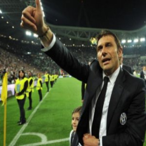
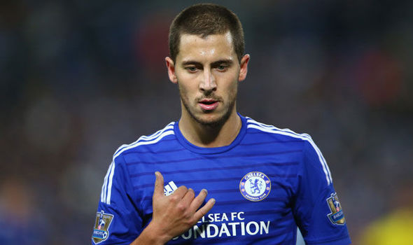
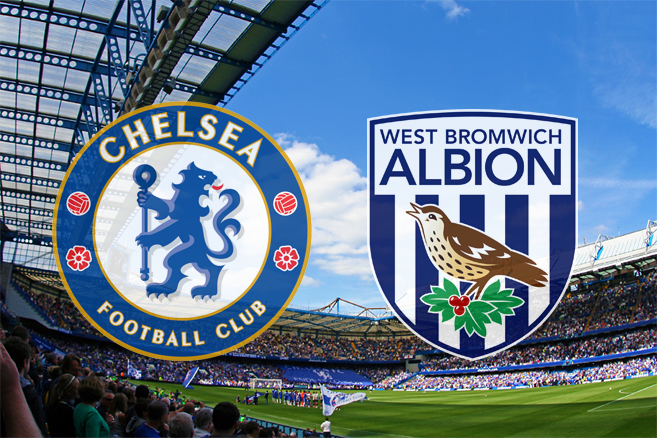
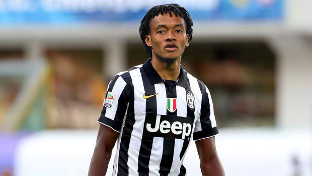
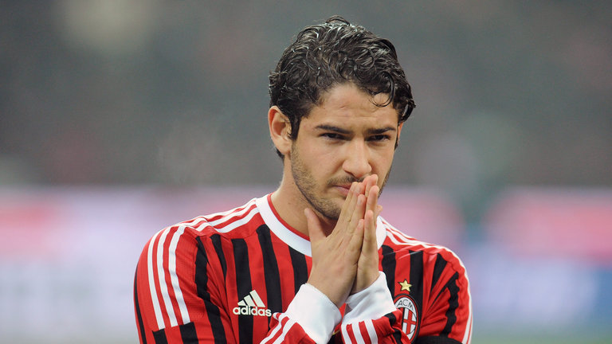
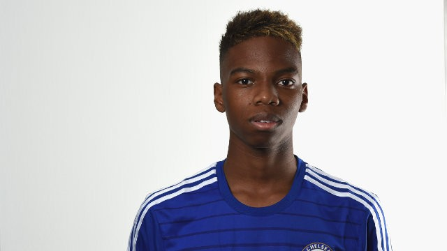

Score Center
- Chelsea 2-2 West Brom
- Chelsea 1-2 PSG
- Chelsea 4-4 Man U
Social Media Center
<Here's your chance to win a Chelsea shirt signed by John Terry... https://t.co/CTy9LJL7f9/a> pic.twitter.com/sl2zSJlQ0G
— Chelsea FC (@ChelseaFC) March 20, 2016
Conte to become Chelsea manager after Euro 2016
Antonio Conte will step down from his position as manager of Italy following Euro 2016. Conte has been heavily linked with the managerial vacancy at Chelsea and this move increases the prospect of him taking over at Stamford Bridge. The 46-year-old was appointed Italy manager in August 2014 shortly after resigning as coach of Juventus. "I feel that I must go back to being a coach in a club to have the opportunity of coaching every day," said Conte. Conte led the Turin club to three successive Serie A titles prior to taking on the national job. Chelsea sacked Jose Mourinho as their manager in December 2015 and appointed Guus Hiddink on an interim basis until the end of the season.
Eden Hazard to leave for PSG
 Barclays Player of the Year 2014, Eden Hazard, has been tempted by a mega offer by Parisian club PSG. The offer is believed to eclipse the $100m world record fee paid by Real Madrid to Manchester United for Cristaino Ronaldo. Although the club have consistently asserted he is not for sale, an offer of the magnitude the French club has offered cannot be ignored. Eden Hazard has been in poor form this season, and has yet to record a single goal or assist. Neither the club nor the player were available for comment.Chelsea 2 West Brom 2
Antonio Conte will step down from his position as manager of Italy following Euro 2016. Conte has been heavily linked with the managerial vacancy at Chelsea and this move increases the prospect of him taking over at Stamford Bridge. The 46-year-old was appointed Italy manager in August 2014 shortly after resigning as coach of Juventus. "I feel that I must go back to being a coach in a club to have the opportunity of coaching every day," said Conte. Conte led the Turin club to three successive Serie A titles prior to taking on the national job. Chelsea sacked Jose Mourinho as their manager in December 2015 and appointed Guus Hiddink on an interim basis until the end of the season.
Cuadrado moves permanently
Antonio Conte will step down from his position as manager of Italy following Euro 2016. Conte has been heavily linked with the managerial vacancy at Chelsea and this move increases the prospect of him taking over at Stamford Bridge. The 46-year-old was appointed Italy manager in August 2014 shortly after resigning as coach of Juventus. "I feel that I must go back to being a coach in a club to have the opportunity of coaching every day," said Conte. Conte led the Turin club to three successive Serie A titles prior to taking on the national job. Chelsea sacked Jose Mourinho as their manager in December 2015 and appointed Guus Hiddink on an interim basis until the end of the season.
Guus Hiddink mum on Pato
Antonio Conte will step down from his position as manager of Italy following Euro 2016. Conte has been heavily linked with the managerial vacancy at Chelsea and this move increases the prospect of him taking over at Stamford Bridge. The 46-year-old was appointed Italy manager in August 2014 shortly after resigning as coach of Juventus. "I feel that I must go back to being a coach in a club to have the opportunity of coaching every day," said Conte. Conte led the Turin club to three successive Serie A titles prior to taking on the national job. Chelsea sacked Jose Mourinho as their manager in December 2015 and appointed Guus Hiddink on an interim basis until the end of the season.
Musonda rejected Barcelona
Antonio Conte will step down from his position as manager of Italy following Euro 2016. Conte has been heavily linked with the managerial vacancy at Chelsea and this move increases the prospect of him taking over at Stamford Bridge. The 46-year-old was appointed Italy manager in August 2014 shortly after resigning as coach of Juventus. "I feel that I must go back to being a coach in a club to have the opportunity of coaching every day," said Conte. Conte led the Turin club to three successive Serie A titles prior to taking on the national job. Chelsea sacked Jose Mourinho as their manager in December 2015 and appointed Guus Hiddink on an interim basis until the end of the season.